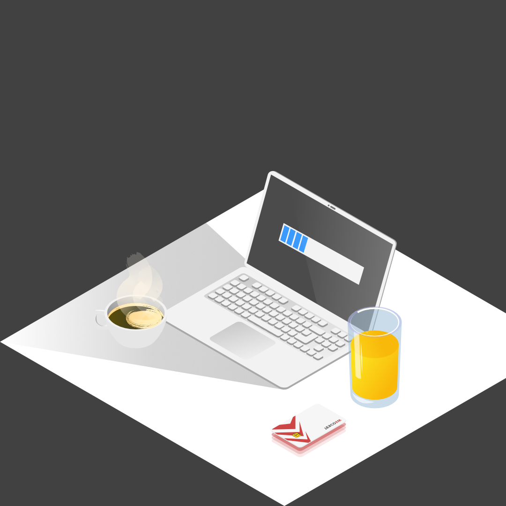
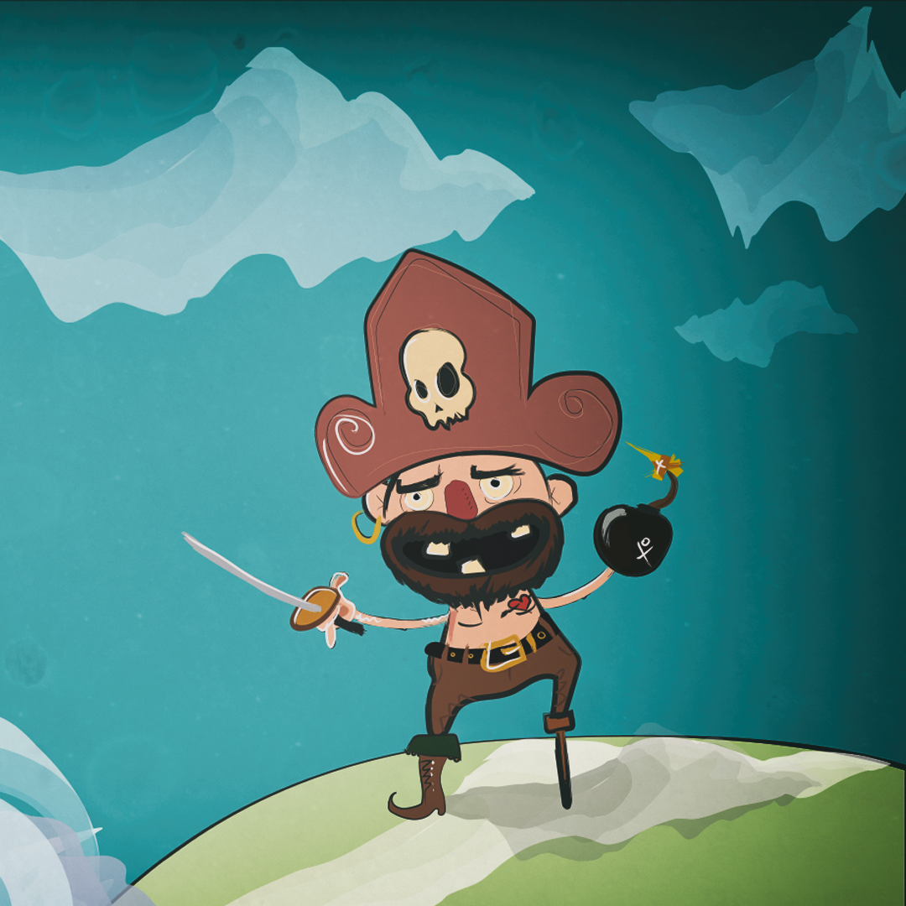
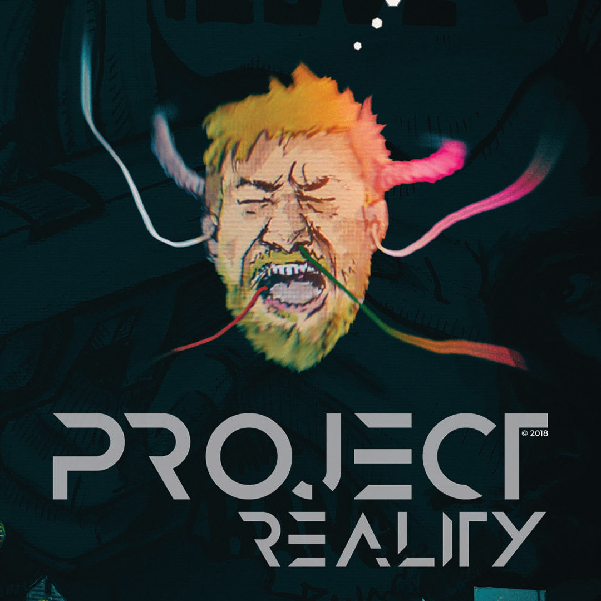
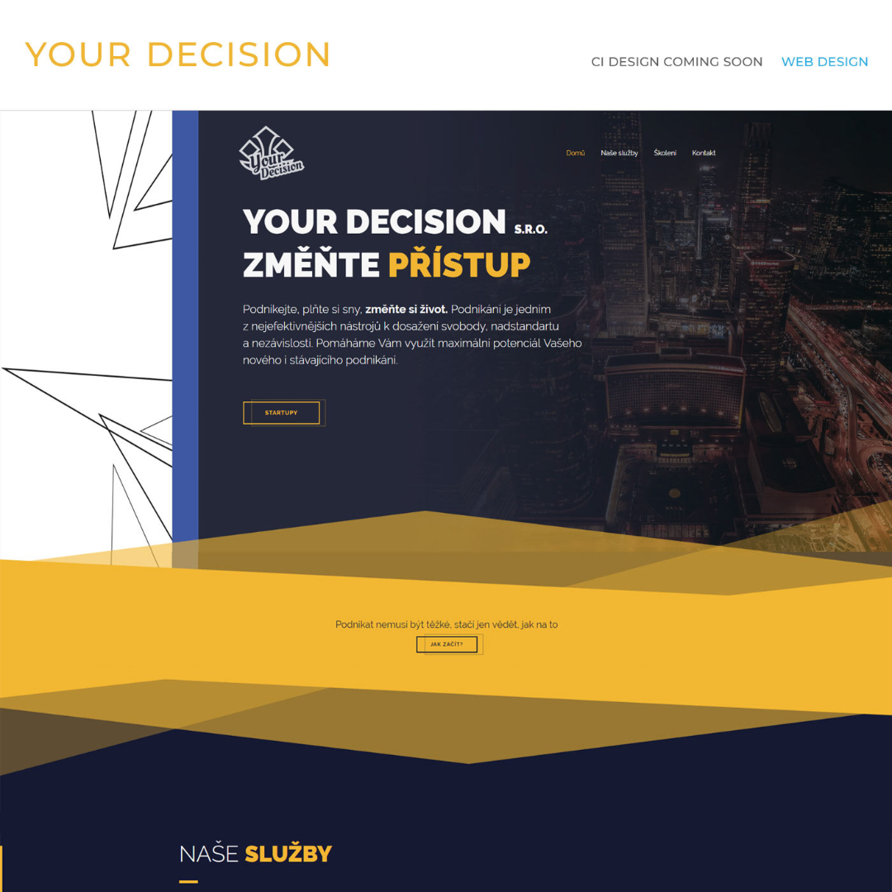
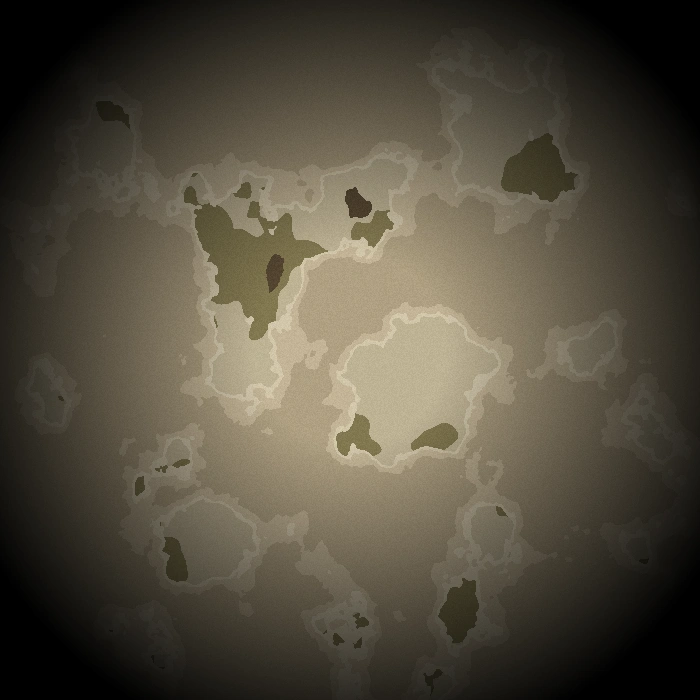

Hry, design, modding a digitální tvorba
Grimoár
Místo, kde Viktor Břenek rozebírá vývoj her, design, modding, ilustraci a další digitální experimenty.

Vývoj her
Aktivně vyvíjím vlastní indie RPG hru. Kombinuje post-apo prvky se steampunkem a magií.

Ilustrace
Izometrické ilustrace vytvořené pro mého současného zaměstnavatele Tesco SW i další klienty.

Grafický design a marketing
Jako UX/UI designer mám roky zkušeností s návrhem responzivních a uživatelsky přívětivých webů i aplikací.

Komiksy
Interaktivní webové komiksy, ve kterých si čtenář volí vlastní osud i průběh příběhu. Projekt je zatím pozastaven.

UX/UI design
Weby, aplikace, koncepty, prezentační grafika i další digitální výstupy pro osobní i firemní použití.

Nástroje
Praktické webové utility pro worldbuilding, tvorbu frakčních erbů, map a další cool nápady.